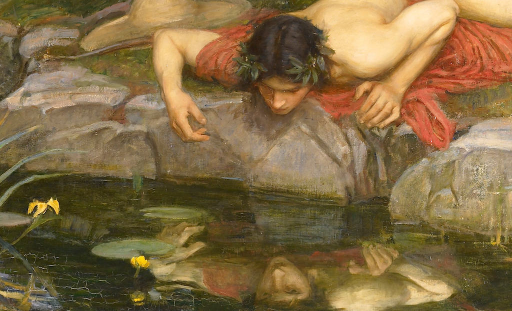

ЕСЛИ ДАТЬ ЛЮДЯМ ВОЛЮ, КООПЕРАЦИЯ БУДЕТ НЕВОЗМОЖНА ИЗ-ЗА ПРИРОДНОГО ЭГОИЗМА
Неправильно
Люди ни эгоистичны, ни альтруистичны от природы — они скорее проявляют те качества, которые поощрает общество.
Товарно-денежные экономики существует всего несколько тысяч лет, а капитализм всего несколько сот лет. Одной из экономик, развиваемых людьми на протяжении долгого времени на всех континентах, до товарно-денежной экономики, была экономика дарения. В этой системе, если у человека чего-то больше, чем ему необходимо, он отдаёт это. Он не назначает цену и не считает долги. Всё, что ты лично не используешь, можно отдать кому-то в качестве подарка, и, раздавая подарки другим, ты воодушевляешь их на щедрость и усиливаешь дружбу, которая позволяет тебе самому купаться в подарках. Многие экономики, основанные на дарении, просуществовали много тысяч лет и при этом оказались намного более эффективными в удовлетворении потребностей человека. Западные экономисты и политологи вначале предполагали, что многие из этих экономик дарения были, на самом деле, бартерными экономиками, но позже это было опровергнуто: люди специально не вели учёт того, кто кому и что должен, чтобы способствовать развитию общества благородства и коллективизма¹².
То, что человек не эгоистичен от природы, доказывают и научные исследования — в частности, многолетняя исследовательская работа Кропоткина «Взаимопомощь как фактор эволюции» и остальные³⁴⁵.
1. Википедия
2. «Анархия работает», Питер Гелдерлоос (2011)
3. Fehr, E., Bernhard, H. & Rockenbach, B. Egalitarianism in young children. Nature 454, 1079–1083 (2008).
4. https://www.livescience.com/27637-monkeys-shun-selfish-others.html
5. Stellar JE, Manzo VM, Kraus MW, Keltner D. Class and compassion: socioeconomic factors predict responses to suffering. Emotion. 2012 Jun;12(3):449-59.
Правильно
Люди ни эгоистичны, ни альтруистичны от природы — они скорее проявляют те качества, которые поощрает общество.
Товарно-денежные экономики существует всего несколько тысяч лет, а капитализм всего несколько сот лет. Одной из экономик, развиваемых людьми на протяжении долгого времени на всех континентах, до товарно-денежной экономики, была экономика дарения. В этой системе, если у человека чего-то больше, чем ему необходимо, он отдаёт это. Он не назначает цену и не считает долги. Всё, что ты лично не используешь, можно отдать кому-то в качестве подарка, и, раздавая подарки другим, ты воодушевляешь их на щедрость и усиливаешь дружбу, которая позволяет тебе самому купаться в подарках. Многие экономики, основанные на дарении, просуществовали много тысяч лет и при этом оказались намного более эффективными в удовлетворении потребностей человека. Западные экономисты и политологи вначале предполагали, что многие из этих экономик дарения были, на самом деле, бартерными экономиками, но позже это было опровергнуто: люди специально не вели учёт того, кто кому и что должен, чтобы способствовать развитию общества благородства и коллективизма¹².
То, что человек не эгоистичен от природы, доказывают и научные исследования — в частности, многолетняя исследовательская работа Кропоткина «Взаимопомощь как фактор эволюции» и остальные³⁴⁵.
1. Википедия
2. «Анархия работает», Питер Гелдерлоос (2011)
3. Fehr, E., Bernhard, H. & Rockenbach, B. Egalitarianism in young children. Nature 454, 1079–1083 (2008).
4. https://www.livescience.com/27637-monkeys-shun-selfish-others.html
5. Stellar JE, Manzo VM, Kraus MW, Keltner D. Class and compassion: socioeconomic factors predict responses to suffering. Emotion. 2012 Jun;12(3):449-59.